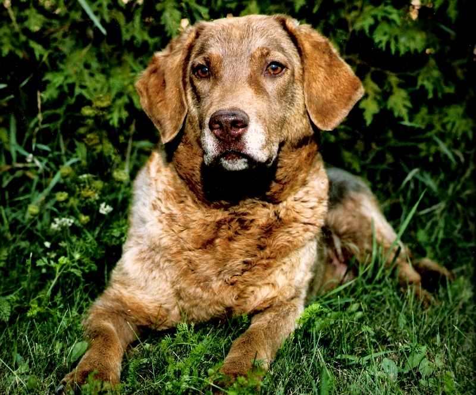

About North Shore Kennels

Am/Cdn CH Codlin's Irish Mystic Keely
North Shore Kennels is located in Southwestern Ontario and is owned and operated by Dana & Veronica Mercer.
The search for our first Chesapeake began in 1988 when Dana realized the necessity for a quality retriever
in waterfowl hunting. After extensive research in the pre-google era, we acquired our first Chesapeake
and soon found ourselves pursuing what would become a
lifetime commitment to this loyal and stoic breed.
Since then, we have learned an extensive amount about the breed and have developed an extremely successful
kennel and breeding program. Our breeding goals are to produce healthy, sound dogs with all the key traits
a Chesapeake should have.
In 2004 North Shore Kennels became "Mercer Reg'd" with CKC (Canadian Kennel Club) and dogs from our breeding have since carried "Mercer"
as a prefix or suffix in their name. Previously, we used "North Shore", "Norshore", and "The North Shore".
North Shore Kennels has produced many champions, excellent hunting companions, faithful family
pets and one licenced conformation judge ;-) We are very actively involved and maintain executive positions in
breed and all-breed clubs as well as rescue.